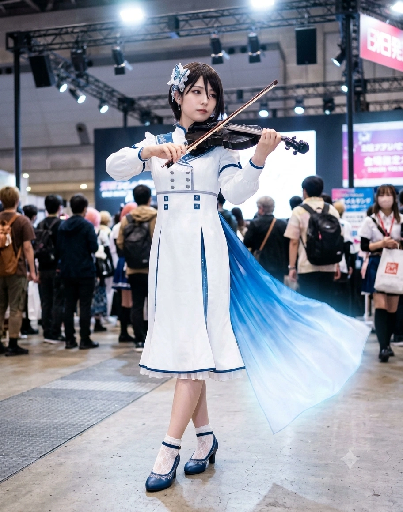

1. 개요
"음악은 조화(Harmony)잖아. 감정에 휘둘려 박자와 음정을 흐트러뜨리는 건 에너지 낭비야. ...자주 듣는 말이지만, 딱히 화난 게 아니야."
"내가 되고 싶은 자신이 있다면... 그건 마서령(쿠라타) 씨, 당신 같은 사람일지도 모르겠네. ...어라? 기유호(키리가야) 씨, 당신처럼 되고 싶냐고요? 그건 단칼에 사양하겠습니다."
효빈광역시 최고의 부촌인 창전구에서도 로펌과 회계법인, 금융가가 밀집한 엘리트 타운 팔조동(八潮洞)과 최고급 프라이빗 빌라촌 유류동(瑠唯洞)의 정점에 군림하는 천재 5현 바이올리니스트이자, 5인조 심포닉 걸즈 록 밴드 『모르포니카(Morfonica 효빈)』의 바이올린 및 전곡 메인 작곡 담당. 2003년생 여성으로 효빈대학교 자연과학대학 수학과와 예술대학 관현악과(바이올린 전공) 복수전공을 2026년 2월 4.5 만점 전체 수석으로 학사 졸업했으며, 현재는 어머니의 금융사인 유류동 『블루벨벳 자산운용』의 퀀트(수리금융) 전략이사 겸 『효빈시립교향악단』 최연소 객원 악장(프로 바이올리니스트), 그리고 모교 『효빈대학교 수리과학·음향학 연구소』 수석 연구원으로 재직하고 있는 초특급 엄친딸이다.
그녀가 태어난 팔조동(八潮洞)의 한자 '팔조(八潮)'는 《BanG Dream!》 Morfonica의 바이올리니스트 야시오 루이(八潮 瑠唯)의 성씨 '야시오(八潮)'를 한국식 한자음으로 읽은 것이며, 거주지인 유류동(瑠唯洞)의 한자 '유류(瑠唯)'는 루이의 이름 '루이(瑠唯)'와 100% 똑같다![6]심지어 휴대폰 번호 뒷자리와 차량 번호판도 야시오 루이의 일본어 고로아와세(숫자 말장난)인 '84061(야-시-오-루-이)'을 사용한다! 생년월일 또한 애니메이션 설정상 루이와 동일한 2003년 11월 19일생(전갈자리)이다.
흑갈색 긴 숏컷 헤어(한쪽 옆머리를 귀 뒤로 넘기고 가운데 앞머리 한 가닥을 내린 스타일)에 작고 가느다란 눈매, 도톰하고 매력적인 입술, 그리고 169cm의 장신에 B94(G~H컵)라는 비현실적인 성숙미를 지녀 고등학교 1학년 때부터 학생이 아니라 '부잣집 젊은 사모님'으로 오해받았던 성숙 노안(?)의 아이콘이다. 감정보다 현실과 효율, 원칙을 최우선으로 삼아 누구에게나 직설적인 팩트 폭격을 날리지만, 결과적으로는 멤버들을 가장 완벽하게 보좌하고 챙겨주는 '다루데레(무심한 듯 다정한 츤데레)'의 정석이다.
2. 생애 및 커리어 (팔조동과 유류동의 냉철한 5현 바이올린 여제)
2.1. 3살 때부터 활을 잡은 팔조(八潮)동의 신동과 피아노 소꿉친구(린코 포지션)와의 이별
2003년 11월 19일, 효빈광역시 창전구 팔조동에서 대형 로펌 대표변호사인 아버지 조명환 씨와 자산운용사 대표이자 전직 바이올리니스트인 어머니 유정원 여사의 외동딸로 태어났다. 이주시(쌍엽동 급식재벌 딸), 기유호(동곡동 패션기업 딸)와 함께 '창전구 3대 쌉부자'를 구성하는 로열 패밀리다.
담당 성우이자 세계적인 프로 바이올리니스트인 Ayasa의 실제 이력과 똑같이, 류희는 만 3살이 되던 해에 어머니의 손에 이끌려 처음 바이올린 활을 잡았다! 놀랍게도 유아기~초등학교 저학년 시절의 류희는 지금의 차갑고 기계적인 모습과는 정반대로, 무척 밝고 명랑하며 잘 웃는 평범한 음악 소녀였다(원작 『지금 시작되는 나/나의 소리』 이벤트 고증).
당시 어린 류희에게는 함께 클래식 음악학원에 다니며 '루이(류희) 쨩', '린 쨩'이라고 부르던 둘도 없는 피아노 천재 소꿉친구(시로카네 린코 포지션의 1살 언니)가 있었다. 그 언니가 대형 피아노 콩쿠르의 중압감에 눌려 음악을 그만두려 했을 때, 어린 류희가 직접 그 언니의 손을 붙잡고 바이올린-피아노 세션을 함께 연주하며 언니가 음악을 포기하지 않도록 구원해 주었다. 그러나 정작 그 직후 열린 전국 주니어 콩쿠르에서, 류희 본인의 바이올린은 그 언니의 압도적인 피아노 재능과 경쟁자들의 벽을 넘지 못해 매번 1등(대상)을 놓치고 2등에 머물렀다.
2.2. "Top(1위)이 아니면 의미가 없다": 바이올린 절연과 창전구 소재 『월삼여고』 2학년 학생회장 등극
콩쿠르 1위를 달성하지 못한 좌절감과 엘리트 가문의 무언의 압박 속에서, 사춘기에 접어든 류희는 "어떤 분야든 정점(Top, 1위)에 서지 못할 바에는 계속하는 의미가 없다. 감정은 자만과 비효율을 낳을 뿐이다"라는 극단적인 합리주의·완벽주의 철학으로 스스로를 무장하기 시작했다.
결국 팔조중학교 진학 무렵, 그토록 사랑하던 바이올린을 케이스에 넣어 봉인해 버리고(단, 하루라도 악기를 만지지 않으면 불안해하는 본능 때문에 매일 관리는 계속함) 오직 학업과 학생회 활동에만 매진했다. 팔조초·팔조중을 모두 전교 1등으로 졸업한 류희는 효빈광역시 창전구 내에 위치한 명문 사립 여고인 월삼여자고등학교(月森女子高等學校 / 츠키노모리 여학원 포지션)로 진학했다.
[지리 및 학군 고증 주의: 빈주시 장기구 월삼동(月三洞)과는 전혀 다른 곳에 위치한 창전구 명문 여고!]
간혹 타 지역 사람들이 '월삼여자고등학교'라는 교명만 보고 덕빈북도 빈주시 장기구에 있는 '월삼동(月三洞)'에 위치한 학교이거나 옆 동네 학교라고 착각하곤 하지만, 실제로 빈주시 장기구 월삼동과 효빈광역시 남동부 창전구는 물리적 거리가 상당히 먼 전혀 다른 권역이다! 류희와 모르포니카 멤버들이 다닌 『월삼여자고등학교(月森女高)』는 옛 학원 창립자가 '달빛 비치는 푸른 숲(月森, 츠키노모리)'이라는 아호에서 따와 지은 교명으로, 빈주시 월삼동(月三洞)과는 한글 표기만 우연히 일치할 뿐 지리적으로는 100% 효빈시 창전구 학군 내에 자리 잡고 있다. 또한 특목고나 자사고가 아닌 창전구 학군 소속 '고교 평준화 일반계 고등학교'였기 때문에, 팔조동·유류동 최상류층 영애인 조류희와 칠심3동 다세대 빌라에 살던 저소득층 소녀 마서령·심나나가 같은 학교에서 운명처럼 만날 수 있었다.
류희는 월삼여고에서도 입학 직후부터 전교 수석을 독점했으며, 체력검정 단거리 달리기에서는 육상부 에이스인 기유호보다 빠른 전교 신기록을 세우고 라크로스부·펜싱부 등 모든 운동부의 스카우트 제의를 받았으나 "흥미도 없고 전국 1위가 될 생각이 없으니 비효율적이다"라며 전부 거절했다. 그리고 고등학교 2학년 진급과 동시에 압도적인 득표율로 월삼여고 전교 학생회장에 당선되었다.
2.3. 『모르포니카』 합류와 2장 탈퇴 소동: 마서령에게 구원받은 감정의 선율
고1 봄날, 밴드를 결성하려던 마서령, 기유호, 이주시, 심나나 네 사람이 찾아와 간곡하게 밴드 합류를 애원했을 때, 처음에 류희는 "초보자들과 밴드를 하는 건 시간 낭비입니다"라며 거절했다. 그러나 '이론과 효율만이 아닌, 감정을 우선시해 선택한 길의 끝에는 무엇이 있는지 확인해 보고 싶다'는 지적인 호기심이 발동하여, 자신이 과거에 작곡해 두었던 바이올린 곡을 건네주며 『모르포니카』의 다섯 번째 멤버(바이올리니스트 겸 메인 작곡가)로 합류했다. 그리고 그 곡에 마서령이 가사를 붙인 것이 바로 전설의 데뷔곡 『Daylight -데이비드/데이라이트-』다!
가장 드라마틱한 사건은 고2 시절(밴드 스토리 2장 『fly with the night』 고증)에 벌어졌다. 멤버들과 함께하며 자신도 모르게 감정에 따라 행동하고 웃기 시작한 자신의 변화를 받아들이지 못한 류희가 "감정의 끝에는 자기만족뿐이다"라며 돌연 밴드 탈퇴를 선언한 것이다! 이때 심나나가 류희의 악보를 가리키며 "루이루이, 이미 악보 코드 진행부터 기분에 따라 감정적으로 쓰고 있었으면서 거짓말하기는~"이라며 정곡을 찔렀고, 결정적으로 학생회실로 찾아온 보컬 마서령이 떨리는 목소리로 류희의 심장을 관통하는 한마디를 던졌다.
마서령: "류희 씨는... 재능도 있고 머리도 좋고 완벽해서 부럽지만, 전혀 어른이 아니에요! 왜 자기 자신의 마음만은 믿어주지 않는 건가요?! 류희 씨도... 스스로를 믿어주는 자신이 되고 싶지 않나요?!"
조류희: (생애 처음으로 자신의 고독과 본심을 꿰뚫어 본 서령이의 말에 눈을 크게 뜨고 부드럽게 미소 지으며) "...나쁜 사람은 아니니까, 당신의 충고를 들어주도록 하죠. 마서령 씨... 만약 제가 되고 싶은 자신이 있다면, 그건 당신처럼 솔직하게 감정을 마주하는 사람일 겁니다. 저를 다시... Morfonica에 넣어주시겠습니까?"
이 사건 이후 류희는 '1위 지상주의'의 강박에서 완전히 해방되었고, 2년 선배(타치바나 선배 포지션)와의 협연회에서 프랑스 예술가들의 강연 통역을 즉석에서 완벽히 해낸 뒤 어린 시절 소꿉친구(린코 포지션)와도 화해하며 진정한 음악의 조화를 되찾았다.
2.4. 효빈대 수학과·관현악과 복수전공 수석 졸업 및 『블루벨벳 자산운용』 퀀트 전략이사·효빈시향 최연소 객원 악장 취임
2022학년도 대입에서 효빈대학교 자연과학대학 수학과(22학번)에 전체 수석으로 입학함과 동시에, 예술대학 관현악과(바이올린 전공) 복수전공을 신청해 이공계 수리논리와 클래식 음악 실기를 동시에 평정했다. (참고로 고3 입시 당시 암기 과목 낙제 위기였던 친구 기유호를 붙잡아 최저 내신을 방어해 준 덕분에 유호가 의류산업학과 5차 추가합격 전화찬스 막차를 탈 수 있었다!) 2003년생 여성으로서 휴학 없이 4년간 전 학기 평점 4.5 만점이라는 전무후무한 기록을 달성한 류희는, 2026년 2월 효빈대학교 수학과 및 관현악과를 복수전공 전체 수석으로 학사 졸업했다!
대학을 졸업한 2026년 현재, 조류희는 자신의 두 가지 전공을 모두 살려 초인적인 쓰리잡(?) 프로 커리어를 전개하고 있다. 첫째로 수학 전공을 살려 어머니 유정원 대표가 이끄는 유류동 『블루벨벳 자산운용』의 최연소 퀀트(Quant, 수리금융 알고리즘) 전략이사로 재직 중이며, 둘째로 관현악 전공을 살려 『효빈시립교향악단』의 최연소 객원 악장(프로 바이올리니스트) 및 모교 『효빈대학교 수리과학·음향학 연구소』 수석 연구원으로 활동하고 있다. 또한 효빈대학교 부설 종합사회복지관 사회복지사 겸 사례관리상담사로 근무하는 단짝 마서령이 학대 피해 아동이나 법적 분쟁에 처한 위기청소년 사례를 맡을 때마다, 아버지 조명환 대표변호사의 『법무법인 팔조』 공익법무팀을 즉시 연결해 무료 법률 대리(프로보노)를 제공하는 가장 든든한 조력자로 활약 중이다.
아울러 담당 성우 Ayasa의 본체 활동을 그대로 계승하여, 고등학교 시절부터 유튜브와 빌리빌리에 각종 애니메이션 캐릭터(세이버, 바이올렛 에버가든, 뱅드림, 우마무스메 등)를 완벽하게 코스프레한 상태로 일반 4현이 아닌 특수 제작 『5현 바이올린』으로 애니송을 초절정 기교로 커버하는 '오타리스트(오타쿠+바이올리니스트)' 채널을 운영해 현재 구독자 55만 명을 보유한 메가 크리에이터로도 활동 중이다.[7]기유호가 "야 류희야! 넌 자산운용사 이사님이 만화 캐릭터 코스프레하고 유튜브 찍는 게 어떻게 효율적인 거냐?!"라고 물으면, 류희는 "유튜브 조회수 알고리즘 데이터상 코스프레 착용 시 평균 조회수가 3.4배, 수익률이 280% 상승합니다. 지극히 합리적이고 과학적인 선택이죠"라고 태연하게 대답한다.
3. 비주얼 및 캐릭터성 (169cm·B94 최장신 글래머 & 백화점 점원 코디 사모님)
3.1. 세계관 4대 거유 사천왕의 정점(169cm, B94)과 청소년 티켓 거부 사태
조류희의 비주얼은 한마디로 "스물두 살 사회초년생(고교·대학 시절엔 학생)의 신분증을 가진 매혹적인 재벌가 젊은 사모님"이다. 신장은 169cm로 모르포니카 내 최장신이자 성우 Ayasa 본체와 똑같은 8.5등신 모델 기럭지를 자랑한다.
무엇보다 원작 팬덤과 공식 일러스트에서 이아리(아리사, 152cm B93), 허마리(히마리, 155cm B92), 시로카네 린코와 함께 '뱅드림 4대 거유 사천왕'으로 꼽히며, 그중에서도 큰 키(169cm)와 골격 덕분에 실질적인 윗가슴둘레와 시각적 볼륨감이 세계관 전체 1위로 평가받는 고증을 완벽히 반영하여 무려 B94(G~H컵)-W58-H88이라는 폭력적인 피지컬을 보유하고 있다! 심지어 다른 밴드의 후배나 친구(키타자와 하구미 포지션 등)가 류희를 볼 때마다 대놓고 "루이루이(류희 언니)는 키도 엄청 크고 가슴이랑 몸매도 어른 같아서 너무 부러워~!"라고 직접 언급할 정도다.
[왜 항상 '부잣집 사모님' 같은 옷만 입는가? — 극한의 쇼핑 효율주의!]
류희가 사복이나 출근복을 입을 때마다 또래 20대 초반 여성 같은 캐주얼이 아니라 우아한 롱코트나 실크 블라우스, 중후한 오피스룩 정장 같은 '사모님 패션'을 하고 나타나는 이유는 본인의 취향 때문이 아니다. 옷을 고르는 데 시간을 쓰는 것이 비효율적이라고 판단한 류희가 백화점 명품관에 들어가 "마네킹에 걸려 있는 코디 그대로 주세요" 혹은 "점원분이 보시기에 제 체형에 가장 잘 어울리는 걸로 추천해 주세요"라고 말하는데, 점원들이 169cm·B94의 성숙한 류희를 30대 초반의 대기업 중역이나 사모님으로 착각해 중후한 명품 의상만 골라주기 때문이다![8]이 극강의 성숙 노안(?) 때문에 고등학생 시절 영화관 매표소에서 "청소년 티켓 한 장 주세요"라고 했다가 직원이 신분증 위조를 의심하며 이상한 눈으로 쳐다봐 상처받은 적이 있으며, 150cm의 리더 이주시(츠쿠시)와 같이 다니면 백이면 백 '젊은 엄마와 초등학생 딸(또는 큰언니와 늦둥이 여동생)'로 오해받는다.
3.2. 새알심 단팥죽 감별사와 숨겨진 '버블티 포인트카드 & 반려묘 도야 님' 덕후
취미란에 당당하게 '없음'이라고 적어놓을 만큼 스토익한 삶을 살지만, 그녀의 무표정한 포커페이스를 무너뜨리는 세 가지 비밀스러운 취향이 존재한다.
- 새알심 단팥죽(시루코) 절대 미각 감별사: 맛이 너무 진하거나 자기주장이 강한 자극적인 음식(심나나가 좋아하는 마라탕 등)은 질색하지만, 유독 '새알심(시라타마 경단)이 들어간 단팥죽' 앞에서는 눈빛이 달라지며 극도로 엄격하게 팥의 당도와 찰기, 온도(여름엔 차가운 단팥죽 4~8도, 겨울엔 따뜻한 단팥죽 65도)를 따지는 미식가로 변한다.
- 버블티(공차·차타임) 포인트 카드 수집광 (성우 Ayasa 본체 기믹!): 천모카가 빵집 포인트 카드를 모은다면, 조류희는 담당 성우 Ayasa의 실제 취향 그대로 '타피오카 펄 버블티(밀크티)'에 중독되어 있다! 그녀의 명품 가죽 지갑을 열어보면 팔조동·동곡동에 있는 공차(Gong cha), 차타임(Chatime), 더앨리 등 전국 모든 버블티 브랜드의 VIP 스탬프 카드와 앱 바코드가 완벽한 가나다순으로 정리되어 있다. "타피오카의 전분 당분은 퀀트 수식 연산과 바이올린 보잉 근육 회복에 가장 효율적인 에너지원입니다"라고 변명하지만 그냥 버블티 덕후다.
- 반려묘 '도야 님(ドヤ様)'의 충실한 집사 (성우 Ayasa 본체 기믹!): 유류동 자택에서 키우는 회색 스코티시 폴드 고양이 '도야' 앞에서는 평소의 냉철한 전략이사·악장 포스가 증발하고 "도야 탄~ 도야 님~ 오늘 하루도 평안하셨습니까..."라며 혀 짧은 소리를 내는 중증 고양이 집사다. 이 점 때문에 로젤리아 포지션의 보컬 선배(미나토 유키나 포지션)와 고양이 사료 정보를 교환하며 은밀한 친분을 쌓고 있다.
4. 정치 성향: 팔조동 법조·금융 엘리트의 합리주의와 반(反)국힘 팩트 폭격
4.1. "비논리와 혐오 선동은 에너지 낭비입니다"
"특정 정당에 당원비와 행정 시간을 할애하는 것은 비효율적이기에 제 당적은 무소속입니다. 하지만 덥다고 떠들어도 시원해지지 않듯, 아무런 논리적 근거 없이 상대방을 빨갱이나 오타쿠 카르텔로 몰아붙이는 국민의힘 윤재훈 씨의 유세는 심각한 사회적 에너지 낭비이자 공해입니다. 아버지 로펌 변호사님들의 법률 검토 결과, 당신의 방금 발언은 공직선거법 제250조 및 형법 제307조 위반 요건을 100% 충족하더군요. 조용히 마이크를 끄시는 것이 당신의 남은 인생에 가장 효율적일 겁니다."
조류희는 금융사 임원 겸 시립교향악단 객원 악장이라는 직책 특성상 공식적인 당적은 두지 않은 무소속이다. 그러나 정치적 성향에 있어서는 창전구의 법조·금융 중심지인 팔조동(八潮洞)과 최고급 빌라촌 유류동(瑠唯洞)의 엘리트 의식을 대변하여, 합리적이고 투명한 행정을 펼치는 더불어민주당과 박효빈 시장을 확고하게 지지한다. 팔조동과 유류동은 자산 규모가 수백억 원에 달하는 초고소득층 거주지임에도 불구하고, 합리와 지성, 글로벌 스탠더드를 중시하는 '창전 리버럴' 성향 덕분에 몰상식한 극우 보수 세력을 벌레 보듯 혐오한다.
특히 류희는 3호선 시종착역인 팔조역과 팔조차량사업소 철도박물관의 명예 소장을 맡고 있어 철도 인프라의 가치를 누구보다 잘 알고 있다. 과거 윤대환 전 시장이 팔조동과 도심을 잇는 전철망과 창전선 계획을 짓밟으려 했던 역사, 그리고 그 아들 윤재훈과 추종자 A씨(02년생)가 2024~2025년 창전구에서 벌인 '한자 문맹 테러'를 지켜보며 류희는 "지능과 교양이 결여된 자들이 권력을 잡는 것만큼 비효율적인 재앙은 없다"는 결론을 내렸다.
반면 팔조동 법조타운에 『팔조 법과 문화 박물관』, 『루이 인텔리전스 갤러리』, 그리고 유류동에 『프라이빗 티크루즈』 등 고품격 스텔스 문화 인프라를 구축해 지역 가치를 2배로 끌어올린 박효빈 시장의 시정에 대해서는 "감정과 이성의 조화를 이뤄낸 가장 효율적이고 훌륭한 행정"이라며 최고 평점을 부여하고 있다.
4.2. 소속 정당 및 지지 성향
| 기간 | 소속 정당 | 비고 |
| 현재 | 무소속 | 정당 미가입 (단, 팔조·유류동의 합리적 엘리트로서 더불어민주당 및 박효빈 시장 확고 지지 / 창전구 청년법률·수리금융자문위원) |
5. 효빈시판 Morfonica 멤버들과의 관계 및 4대 일화
원작의 야시오 루이가 츠키시마 마리나 씨를 포함한 거의 모든 인물을 딱딱하게 '성씨+씨(さん)'로 부르는 고증 그대로, 조류희 역시 멤버들을 부를 때 초창기부터 2026년 대학 졸업 후 전문직 사회인이 된 현재까지도 "마서령 씨(쿠라타 씨), 기유호 씨(키리가야 씨), 이주시 씨(후타바 씨), 심나나 씨(히로마치 씨)"라고 성명+씨를 붙여 부르는 엄격한 거리감을 유지한다(단, 내면적으로는 누구보다 멤버들을 아끼고 있다).
5.1. 멤버별 상세 관계
- 마서령 (馬瑞領 / 쿠라타 마시로 포지션, 2003년생, 154cm) - 내 얼어붙은 감정의 봉인을 풀어준 유일무이한 구원자이자 동경의 대상(현 효빈대 사회복지관 사회복지사):
조류희가 세상에서 가장 특별하게 대하는 단짝(통칭 루이마시 / 마시루이). 다른 멤버들에게는 가차 없이 독설과 팩트 폭격을 날리는 류희이지만, 유독 154cm의 작고 가련한 마서령 앞에서는 목소리 톤이 한 옥타브 부드러워지며 서령이가 눈을 보며 가사를 쓰는 모습만 봐도 흐뭇해하는 등 거의 모성애에 가까운 다루데레(무심한 다정함)를 보여준다.
발렌타인데이에 서령이가 카카오 함량이 너무 높은 다크 초콜릿을 먹고 쓰다고 울상 짓는 것을 보고 다음 날 서령이의 입맛에 딱 맞는 밀크 초콜릿을 사다 주거나, 2장 사건 이후 대놓고 "마서령 씨가 쓰는 가사는 나에게 없는 재능의 결정체야. 내가 되고 싶은 자신이 있다면 마서령 씨 같은 사람이야"라고 선언한 공식 '서령 바라기'다. 2025년 서령이가 쓰레기 구남친 추한석 사건으로 청덕대교 투신 위기에 처했을 때는 주저 없이 자신이 직접 미끼(Decoy)가 되어 추한석을 유류동으로 유인해 체포시켰으며, 2026년 서령이가 효빈대학교 부설 종합사회복지관의 사회복지사 겸 사례관리상담사로 재직하면서 법률 지원이 필요한 위기청소년 내담자를 만날 때마다, 류희가 가장 먼저 나서서 아버지 조명환 대표변호사의 『법무법인 팔조』 공익법무팀을 즉시 연결해 무료 법률 대리(프로보노)를 제공하는 가장 든든한 수호기사로 활약 중이다.
- 기유호 (奇裕昊 / 키리가야 토우코 포지션, 2003년생, 164cm) - 내 감사 보고서 지적 사항의 50% 이상을 차지하는 만년 요주의 인물이자 토우코 도플갱어:
한국의 정통 희귀 성씨인 '기(奇)' 씨에 '넉넉할 유(裕)', '하늘 호(昊)' 자를 쓰는 기유호(奇裕昊)로, 이름의 어감('기유호' ↔ '키리가야 토우코')과 출생지·거주지인 창전구 동곡동(桐谷洞)·투자동(透子洞)의 지명 한자(桐谷 透子), 그리고 화려한 164cm 금발 웨이브 갸루 외모와 "미크론 미크론~!" 말버릇 및 대인배 인싸 성격 덕분에 키리가야 토우코의 완벽한 현실 도플갱어로 불리는 『TOEK-U』 대표이사 사장님(통칭 토우루이).
류희와는 만나기만 하면 으르렁대는 상극의 만담 파트너다. 유호가 마감 이야기만 꺼내도 비명을 지르거나 산타 복장을 입고 거리를 뛰어다니면, 학생회장 출신 류희가 이마를 짚으며 100m 단거리 스프린트로 쫓아가 목덜미를 잡아 오는 것이 일상이다. 하지만 고3 때 유호가 효빈대 의류산업학과 5차 추가합격 전화찬스 막차를 탈 수 있게 과외를 해주고, 유호가 동곡 패션쇼와 라이브를 동시에 준비하느라 과부하가 걸리면 류희가 뒤에서 군말 없이 라이브 행정과 재무 실무를 전부 대신 처리해 주는 바람에, 유호에게 "루이 쨩~ 실은 우리들이 너무 좋으면서~♪"라고 놀림받는다.
- 이주시 (二珠詩 / 후타바 츠쿠시 포지션, 2003년생, 150cm) - 자꾸 내 여동생으로 오해받는 19cm 키 차이의 귀여운 리더:
신장 169cm인 류희와 150cm인 『쌍엽푸드』 신사업본부장 주시가 나란히 서면 정확히 19cm의 키 차이가 나서 어디를 가든 자매(혹은 모녀...)로 오해받는다(통칭 루이츠쿠). 주시가 류희처럼 어른스러워지고 싶다며 억지로 쓴 블랙커피를 마시거나 거짓말을 하면, 류희는 "이주시 씨와 마서령 씨는 거짓말을 하면 0.5초 만에 얼굴에 다 드러나네요"라며 팩폭을 날린다. 그러면서도 프랑스 예술가 강연회 때 주시가 발 벗고 나서서 자신을 도와준 것에 깊이 감사하며 주시의 리더십을 존중한다.
- 심나나 (深羅奈 / 히로마치 나나미 포지션, 2003년생, 157cm) - 서로의 천재성을 1초 만에 꿰뚫어 본 '루이루이' 호출자:
『(주)토에크』 수석 콜라보 아트 디렉터 겸 효빈경제연구원 수석 애널리스트인 나나는 류희를 "루이루이(류희류희)~"라는 겁 없는 별명으로 부른다. 학창 시절 나나가 '평범 연기'를 할 때 그 기만을 유일하게 간파한 것이 류희였고, 반대로 류희가 '감정을 배제한 효율 연기'를 할 때 악보에 숨겨진 감정을 유일하게 간파해 역공을 날린 것이 나나였다. 졸업 후에도 류희의 퀀트 수리금융 모델과 나나의 계량경제 모델이 결합해 창전구 금융·패션 시장을 좌지우지하는 천재 콤비다.
5.2. 효빈시판 모르포니카 5인방 핵심 일화 (각 30줄 이상 4대 사건)
- 모니카 일화 1: 효빈교통공사 『팔조차량사업소 & 철도박물관』 명예 소장 취임과 "1세대 전동차가 바이올린 소리를 듣고 무고장으로 달린다?!" 도시전설! (feat. 박라미, 전원)
창전구 팔조동 끝자락 인입선에 위치한 3호선 열차들의 기지 팔조차량사업소와 기지 내 효빈철도박물관은 지명 한자(八潮 = 야시오) 덕분에 철도 동호인과 뱅드림 팬들이 대통합을 이루는 성지다.
박물관 입장료는 단돈 2,000원으로 극히 저렴하지만 내부 굿즈샵에서 3호선 마스코트 박라미 인형과 팔조역 키링을 팔아 입장료 수익의 50배를 뽑아내는 '극강의 자본주의 효율'을 자랑하는데, 이 경영 효율성에 깊은 감명을 받은 팔조동 대표 인재 조류희가 효빈교통공사로부터 '팔조차량사업소 명예 소장'으로 위촉되었다!
매년 류희의 생일인 11월 19일이 되면 기지 내 철도박물관 카페에서는 효빈교통공사 공식 주관으로 『야시오 루이 & 조류희 합동 생일 카페』가 열리며, 이날 조류희가 직접 자신의 5현 바이올린을 들고 기지 정비고 앞 특설 무대에 올라 『Daylight』와 『우마뾰이 전설(바이올린 세션 버전)』을 품격 있게 독주하는 전통이 생겼다.
기유호: "우와아!! 정비고에 서 있는 노란색 3호선 전동차들 앞에서 루이(류희)가 바이올린을 켜니까 레알 영화 속 한 장면 같아!!"
조류희: "기유호 씨, 정숙하세요. 정비고 내부의 높은 천장 구조는 성당 홀과 유사한 1.8초의 잔향 시간(Reverberation Time)을 형성하여 어쿠스틱 현악기 음향 공명에 가장 효율적인 공간일 뿐입니다."
그런데 놀랍게도, 조류희가 매년 이 팔조차량기지 정비고에서 바이올린 연주회를 연 이후로 여기서 중정비를 받는 노후화된 3호선 1세대 전동차들의 연간 고장률이 0.00%로 수렴하는 미스터리한 기적이 발생했다! 정비사 아저씨들조차 "우리 기지 열차들이 잔고장 없이 쌩쌩 달리는 건 매년 조류희 명예 소장님의 명품 바이올린 주파수로 모터 코일이 정화(?)되어서 그렇다"고 진지하게 믿게 되면서, 류희의 연주 음원은 효빈교통공사 전 차량기지의 공식 작업 BGM으로 채택되었다.
- 모니카 일화 2: 『걸파☆피코 오오모리 7화』 실사판 — 합주실 두꺼비집(차단기) 수색 사건과 유일한 '무(無)개그 바른말 폭격기'의 위엄! (feat. 전원)
효빈시 밴드 판에서 온갖 기행과 만담이 벌어질 때, 유일하게 개그 노선에 휩쓸리지 않고 지극히 현실적이고 정상적인 행동을 해서 오히려 위화감을 주는 인물이 바로 조류희다(원작 걸파☆피코 내 이명: 『바른 말 폭격기』 고증).
어느 날 『RiNG 효빈점』에서 모르포니카가 첫 밴드 소개 홍보 영상을 촬영하던 도중, 기유호가 대용량 조명과 앰프를 동시에 꽂는 바람에 과부하로 합주실 전체가 정전되는 사고가 발생했다!
어둠 속에서 마서령은 "히이이익! 유령이 나타났어! 우린 어둠의 심연에 갇힌 거야!"라며 공상에 빠져 울먹이고, 이주시는 "진정해! 반장인 내가 빛을 만들어낼게!"라며 스틱을 야광봉처럼 흔들다가 떨어뜨리고, 기유호는 "어두우니까 오히려 클럽 같고 레알 쩌는데?!"라며 춤을 추고, 심나나는 손전등을 턱 밑에 비추며 괴담을 시작하는 총체적 난국이 벌어졌다.
그 아비규환 속에서 조류희 혼자만 아무 말 없이 조용히 합주실 밖으로 걸어 나가더니, 관리실 배전반을 열어 떨어진 누전차단기(두꺼비집) 스위치를 '딸깍' 올리고 돌아왔다.
이주시: "어, 어라?! 불이 켜졌네! 그런데 다들 자기소개 영상 다 찍었는데 류희 씨만 화면에 안 찍혔어! 어디 갔었어?!"
조류희: (한숨을 내쉬며) "...정전이 발생했을 때 소리를 지른다고 전기가 돌아오지는 않습니다. 가장 효율적인 해결책은 차단기를 찾아 올리는 것이기에 복도 배전반에 다녀왔습니다. 그런데 제 소개 칸은 빈칸으로 두고 촬영을 끝내셨군요."
4차원 개그 세계관 속에서 홀로 다큐멘터리를 찍는 류희의 지극히 이성적인 행동에, 영상을 편집하던 대선배 우서림(리미) 실장님이 배를 잡고 웃으며 자막으로 [유일한 정상인(차단기 수리공)]을 박아주었다.
- 모니카 일화 3: 4월 1일 만우절 "시험 삼아 거짓말을 해봤더니 모두가 얼어붙었다" 사건! (feat. 전원)
원작 야시오 루이의 2020~2021년 만우절 대사 에피소드가 현실의 효빈대 캠퍼스에서 그대로 벌어진 레전드 사건이다. 평소 거짓말이나 농담 따위는 에너지 낭비라며 일절 하지 않던 원칙주의자 조류희가, 학부 시절 만우절 날 마서령과 심나나가 재미있게 만우절 장난을 치는 모습을 보고는 '인간관계의 윤활유로서 만우절 거짓말이 미치는 심리적 효과를 한번 실험해 볼까'라는 호기심을 품게 되었다.
류희는 점심시간 합주실에 들어오자마자 특유의 감정 없는 무표정한 얼굴과 얼음장 같은 진성 보이스로 폭탄선언을 던졌다.
조류희: "여러분께 통보할 사항이 있습니다. 저 조류희는 오늘부로 수학 및 클래식 전공을 포기하고, 기유호 씨처럼 머리를 금발로 탈색한 뒤 스트릿 힙합 래퍼 및 프로 보디빌더로 전향하기로 결정했습니다. 이미 헬스장 PT 등록도 마쳤습니다."
마서령 & 이주시 & 기유호: (류희가 평생 농담을 한 적이 없는 인물이다 보니 만우절인 것도 까먹고 100% 실화로 믿어버려 그 자리에서 돌하르방처럼 굳어버림) "............에?"
이주시: (5초 뒤 눈물을 글썽이며) "류, 류희 씨... 그동안 복수전공 일이랑 우리 뒷바라지하느라 스트레스가 그렇게 심했던 거야...?! 미안해 내가 리더로서 짐을 덜어줬어야 했는데에에 ㅠㅠ"
기유호: "야, 야 루이!! 머리 탈색은 내가 해줄 수 있는데 갑자기 보디빌더는 왜 하는 건데?! 너 열나냐?!"
조류희: (전원 패닉에 빠져 통곡 직전까지 가는 모습을 보고 당황하여) "...잠깐만요. 오늘은 4월 1일 만우절이라 시험 삼아 거짓말이라는 것을 한번 시도해 본 것뿐입니다. 어째서 농담으로 받아들이지 않고 그대로 굳어버리는 거죠...?"
류희의 포커페이스 연기력이 너무나도 완벽했던 탓에 벌어진 이 만우절 대참사는, 그날 이후 모르포니카 내에서 '조류희 만우절 거짓말 절대 금지 조약'이 체결되는 결과를 낳았다.
- 모니카 일화 4: 쿨뷰티즈(카오루·레이야 포지션 선배들) 합동 공연과 마스킹·츄츄 포지션과의 '불꽃 & 어린이' 팩폭 대첩! (feat. 타 밴드 멤버들)
조류희가 타 밴드의 강자들과 부딪치며 자신의 세계를 넓혀간 두 사건이다(『리틀 로즈·하모니』 및 『파도에 흔들리는 부르종』 고증).
하루는 라이벌 밴드(RAS 포지션)의 천재 꼬마 프로듀서(츄츄 포지션)가 포피파 합동 라이브 직후 류희에게 거만하게 다가와 "어이, 네가 보기에 오늘 어떤 곡이 제일 좋았어(Best)?"라고 떠보듯 물었다. 그러자 류희는 눈 하나 깜짝하지 않고 "질문이 모호하군요. 당신이 말하는 '좋다(Good)'의 평가 척도가 음향적 밸런스인지, 대중적 호응도인지, 화성학적 완성도인지 정의부터 명확히 정리해서 다시 질문해 주시죠. 음악적 소양은 인정하지만 정신 연령은 아직 어린아이(Child)시군요"라고 영혼을 가루로 만드는 팩폭을 날려 꼬마 프로듀서를 대분노하게 만들었다! (그러면서도 뒤에서는 그 프로듀서가 쓴 악보가 바이올린 베이스라는 것을 단박에 알아채고 실력을 인정해 주었다.)
또한 여름 해변 페스티벌에서는 성격이 불같은 그 밴드의 드러머 언니(마스킹 포지션)와 작업 방식 차이로 사사건건 충돌하며 "너 정말 귀엽지 않은 녀석이네!"라는 소리를 들었으나, 류희는 태연하게 할 일을 다 마친 뒤 보컬 언니(레이야 포지션)와 밤바다 불꽃놀이를 바라보았다.
레이야 포지션 선배: "루이(류희) 쨩, 방금 불꽃을 보면서 아름답다고 생각해서 웃었지?"
조류희: (자기도 모르게 입꼬리가 올라간 것을 깨닫고 화들짝 놀라 표정을 감추며) "...아닙니다. 그저 화약의 연소 반응이 대칭적이라고 판단했을 뿐, 딱히 웃은 게 아닙니다. 하지만... 타인의 방식을 이해하긴 어려워도 납득하고 존중할 수는 있다는 건 배웠네요."
이후 류희는 레이야 선배, 그리고 연극부의 카오루 선배(류희가 "그 명언은 셰익스피어의 말이 아닙니다"라고 매번 팩트 체크를 해주는 대상)와 함께 장신 미녀 3인조 유닛 『쿨뷰티즈(Cool Beauties)』로 뭉쳐 『flame of hope』에서 환상적인 보컬 솔로 파트를 선보였다.
6. 바이올리니스트 Ayasa 영접 대소동 & 전설의 주요 일화 (100줄급 6대 사건)
- 대형 일화 1: [2025년 11월 홍대 상상마당 East Of Eden 내한 & 2026 김치쿠라 페스] 프로 바이올리니스트 Ayasa와의 '5현 바이올린 & 공차 버블티' 성캐일치 영접기!
야시오 루이의 담당 성우이자 캐릭터 디자인 모티브 그 자체인 168cm 장신 미녀 바이올리니스트 Ayasa(본명 시마무라 아야사)는 조류희가 3살 때부터 롤모델로 삼아온 인생의 뮤즈다.
두 사람의 역사적인 첫 대면은 모르포니카 내한보다 반년여 앞선 2025년 11월 7일 금요일 밤, 서울 홍대 KT&G 상상마당 라이브홀에서 열린 Ayasa의 프로듀싱 록 밴드 『East Of Eden Live in Seoul - MVXS 6』 단독 내한 공연이었다! 당시 NOL 티켓으로 오픈된 예매 전쟁에서 0.1초 만에 VIP 최전열 1번 좌석을 뚫어낸 조류희는, 자신의 커스텀 5현 바이올린 케이스를 메고 홍대 상상마당 맨 앞줄에 섰다.
공연 도중 무대 앞으로 걸어 나와 신들린 5현 바이올린 속주를 펼치던 Ayasa는, 바로 코앞 객석 1열에 자신과 키(169cm)도 똑같고, 헤어스타일(흑갈색 숏컷)도 똑같고, 심지어 똑같은 스펙의 5현 바이올린 케이스와 '공차(Gong cha) 타로 밀크티 점보 사이즈'를 들고 서 있는 한국의 야시오 루이 도플갱어(조류희)를 발견하고 연주 도중 눈이 휘둥그레졌다!
공연 후 진행된 VIP 하이터치 회에서 Ayasa가 류희의 손을 잡으며 놀라움을 금치 못했다.
Ayasa: "어머나...! 혹시 내가 거울을 보고 있는 건가요?! 키랑 분위기까지 야시오 루이... 아니 나(Ayasa)랑 똑같잖아! 그 가방에 든 건 5현 바이올린 맞죠?!"
조류희: (평소의 포커페이스가 무너지고 귀 끝까지 새빨개져서 유창한 일본어로) "아, Ayasa 선생님...! 저는 선생님을 동경해서 3살 때부터 바이올린을 켜고 지금은 한국 효빈시 팔조동(八潮洞)에서 모르포니카의 루이 포지션을 맡고 있는 조류희라고 합니다! 선생님이 버블티를 좋아하신다고 해서 한국 공차 VIP 기프트카드와 새알심 단팥죽 세트를 선물로 준비했습니다!"
그리고 이 인연은 류희가 대학을 졸업하고 어엿한 객원 악장 겸 퀀트 이사가 된 후인 2026년 8월 8일 경희대 평화의전당 『KIMCHIKURA Fes '26』 모르포니카 완전체 내한 공연에서 정점을 찍었다! 이날 평화의전당 음향이 재앙 수준이었음에도 Ayasa가 심금을 울리는 5현 바이올린 독주로 공연장을 압도했을 때, 박효빈 시장과 조류희는 벅찬 감동에 눈시울을 적셨다.
이어진 1차 MC에서 토우코(스구타 히나)가 앰프 뒤 메모지를 보고 한국어를 읽자, 무대 위 Ayasa(루이 역)가 차가운 루이 톤으로 "(일) 키리가야상, 소레와 렌슈데와 이와나인데와? (키리가야 씨, 그건 연습이라고 할 수 없지 않나요?)"라고 태클을 건 뒤, 토우코가 그럼 루이가 해보라고 하자 부드러운 미소와 함께 완벽한 한국어 발음으로 "(한) 오늘은 함께 멋진 추억을 만들어보아요"라고 말해 객석을 녹여버렸다!(실제 현장 MC 복원록 100% 고증)
이때 Ayasa가 객석 1열에서 기유호(토우코 본체)의 목덜미를 잡고 서 있는 조류희를 정확히 바라보며 활 끝으로 윙크를 날려주자, 평생 감정을 숨기던 얼음 공주 조류희가 두 손으로 입을 가리고 감격의 미소를 터뜨리는 진귀한 광경이 목격되었다.
- 대형 일화 2: 『우마무스메 프리티 더비』 '우마뾰이 전설' 5현 바이올린 광속 커버와 박효빈 시장·마치코(Machico) 동시 성불 사건!
담당 성우 Ayasa의 커리어 중 서브컬처 팬들에게 가장 유명한 이력 하나가 바로 게임 《우마무스메 프리티 더비》의 전설적인 주제가 『우마뾰이 전설(うまぴょい伝説)』 원곡 레코딩에 참여한 3명의 바이올린 세션 중 핵심 1인이라는 사실이다!
현실의 조류희 역시 자신의 55만 구독자 유튜브 채널(오타리스트 루이)에 우마무스메의 '토카이 테이오' 승부복을 완벽하게 코스프레한 상태로, 극악의 템포와 조바꿈을 자랑하는 『우마뾰이 전설』을 5현 바이올린 솔로로 단 한 번의 활 미스도 없이 초고속 연주해 내는 커버 영상을 업로드해 조회수 500만 뷰를 찍었다!
그런데 이 영상에 누구보다 열광하며 '좋아요'와 시정 홍보 콜라보 러브콜을 보낸 인물이 있었으니, 바로 우마무스메 최고 최애(오시)가 '토카이 테이오'인 박효빈 효빈광역시장이었다!
박효빈 시장: (시청 공식 문화 행사 대기실에서 조류희를 만나 감격하며) "조류희 악장님!! 그 토카이 테이오 코스프레 『우마뾰이 전설』 5현 바이올린 커버 영상은 인류 문화유산입니다!! 지난번 김치쿠라 페스 때 제가 Ayasa 님의 바이올린 독주와 토카이 테이오 성우 Machico(마치코) 님을 동시에 실물 영접하고 궁극의 성불을 이뤘는데, 우리 효빈시에도 똑같은 마스터가 계셨군요!!"
조류희: "시장님, 과찬이십니다. 『우마뾰이 전설』은 BPM 변화와 고음역대 도약이 심해 손끝 스트레칭과 보잉 효율성을 극한으로 테스트하기에 가장 적합한 곡일 뿐입니다. 원하신다면 다음 HAF 개막식 축주(祝奏)로 연주해 드리죠."
실제로 그해 HAF 개막식에서 조류희가 효빈시립교향악단과 함께 『우마뾰이 전설』 심포닉 바이올린 협주곡 버전을 연주하자, 시장석의 박효빈 시장이 감격의 기립박수를 치며 성불하는 명장면이 탄생했다.
- 대형 일화 3: 로젤리아 피아니스트(시로카네 린코 포지션)와의 눈물의 재회 — '창전 시사이드 콘서트홀' 합동 리사이틀!
조류희가 중학교 시절 바이올린을 그만두게 만들었던 거대한 벽이자, 사실은 어린 시절 누구보다 서로를 아꼈던 피아니스트 소꿉친구 '린 쨩(시로카네 린코 포지션, 1살 선배)'과의 응어리를 완전히 풀어낸 감동 실화다(『조화와 변화의 아날리제』 및 『지금 시작되는 나/나의 소리』 고증).
오랫동안 서로를 '시로카네 씨', '야시오(조) 씨'라고 어색하게 성으로 부르며 거리를 두었던 두 사람이었지만, 모르포니카를 통해 '1위가 아니어도 음악을 사랑하는 마음'을 깨달은 류희는 창전3동 해변로의 바이올린 케이스 모양 공연장인 『창전 시사이드 콘서트홀』에서 열리는 실내악 시리즈에 직접 린코 선배를 초청해 10년 만의 듀오 세션을 제안했다.
리사이틀 당일, 어린 시절 두 사람이 함께 연주했던 추억의 소나타가 5현 바이올린과 그랜드 피아노의 선율로 홀 전체에 울려 퍼졌다. 과거 콩쿠르 1등에 집착할 때는 듣는 이가 괴로울 정도로 날카롭고 차가웠던 류희의 바이올린 소리가, 이제는 마서령과 모니카 멤버들의 온기를 머금고 봄바람처럼 따스하고 풍부하게 피아노를 감싸 안았다!
린코 포지션 선배: (연주가 끝난 뒤 눈물을 글썽이며 미소 짓고) "루이(류희) 쨩... 어릴 때 네가 날 붙잡아주지 않았다면 난 피아노를 계속 치지 못했을 거야. 오늘 네 바이올린 소리... 옛날의 밝고 상냥했던 루이 쨩의 소리가 다시 들려서 정말 기뻤어..."
조류희: (오랜만에 들어보는 '루이 쨩'이라는 호칭에 눈가가 촉촉해지며) "...린 쨩. 그때의 저는 당신이라는 드높은 벽 앞에서 도망쳤지만, 이제는 내 동료들과 함께 당신의 소리를 당당히 좇아갈 수 있어요. 고마워요."
객석에서 이를 지켜보던 마서령과 이주시가 손수건으로 눈물을 훔쳤고, 두 천재 연주자의 화해는 효빈시 클래식·밴드계의 전설적인 명장면으로 남았다.
- 대형 일화 4: 유류역 지하 3층 분수대 '물소리를 바이올린 소리로 듣는 오타쿠들'과 조류희의 심야 강림 해프닝!
창전구 프라이빗 부촌인 유류동(瑠唯洞 = 루이)에 위치한 2호선 유류역 지하 3층 대합실에는 지명 유래("흐름이 있다")를 살려 만든 실내 분수대가 있다. 평소 유류역과 팔조역 승강장에서 바이올린 소리가 들린다는 괴담이 돌자, 루이 팬들은 "루이 님이라면 시끄럽고 비효율적인 지하철역에서 연주할 리 없다! 대신 이 분수대 물소리를 루이 님의 바이올린 선율로 뇌내 필터링하며 로즈 티를 마시자!"라며 분수대 앞 벤치에서 경건하게 물소리만 듣는 기괴한 성지순례 문화를 정착시켰다.
그러던 어느 해 11월 19일(류희 생일) 밤 11시, 유류동 자택으로 귀가하던 진짜 조류희가 유류역 지하 분수대 앞에 앉아 허공을 보며 "아아... 물방울이 튀는 파동에서 『Daylight』의 3옥타브 솔(#G) 하모닉스가 들려..."라며 집단 환청(?) 명상에 빠져 있는 30여 명의 팬들을 목격했다!
평소 같으면 "비과학적인 환청입니다"라고 무시하고 지나갔을 류희였으나, 자신의 생일을 축하하기 위해 추운 밤 지하역에 모여 조용히 질서를 지키는 팬들의 정성에 마음이 움직였다. 류희는 말없이 분수대 앞에 서서 가방에서 5현 바이올린을 꺼내 들고, 분수대 물소리를 반주 삼아 무반주 파가니니 카프리스와 『flame of hope』를 단 3분간 완벽하게 라이브로 연주해 주었다!
팬들: (눈을 떠보니 진짜 조류희가 눈앞에서 연주를 마치고 바이올린을 넣는 모습을 보고 단체로 숨이 멎으며) "허억...!! 환청이 아니었어!! 유류역의 여신님이 진짜로 강림하셨다아아!!" (박수 소리가 부촌에 방해될까 봐 전원 소리 없이 눈물만 흘리며 무음 물개박수를 침)
조류희: (목례를 건네며 차분하게) "추운 밤에 지하에서 물소리만 듣고 계시는 건 건강 관리 측면에서 비효율적입니다. 앞에 있는 유류 커피 살롱 『Blue Velvet』에 제 이름으로 따뜻한 블루 로즈 티 30잔을 선결제해 두었으니, 마시고 귀가하시죠."
쿨하게 카드 플렉스까지 남기고 유류역 에스컬레이터로 사라진 류희의 뒷모습은 유류동 성지순례 역사상 가장 고품격 미담으로 박제되었다.
- 대형 일화 5: 겨울철 '장갑과 손끝 스트레칭'의 철칙 — 마서령의 수제 뜨개질 장갑 선물에 무너진 철벽!
원작 대사집에서 야시오 루이가 겨울만 되면 "이 시기에는 장갑이 빠질 수 없어. 손가락이 차가워지면 연주에 방해가 돼", "겨울은 연주 전에 손끝 스트레칭에 공들일 필요가 있어"라고 강조하듯, 프로 바이올리니스트인 조류희에게 '양손 열 손가락의 보온과 관리'는 생명줄과도 같다.
평소 류희는 백화점에서 가장 보온 효율이 높은 기능성 가죽 장갑만 착용했는데, 어느 겨울날 눈이 내리는 것을 보며 가사를 쓰던 단짝 마서령(마시로)이 어머니의 마시동 뜨개질 공방에서 밤새워 직접 뜬 '초록색(류희 상징색) & 파란 나비 자수 캐시미어 수제 벙어리·손가락 겸용 장갑'을 수줍게 건넸다.
마서령: "류, 류희 씨... 내 뜨개질 솜씨가 서툴러서 명품 장갑보단 못하겠지만... 겨울에 류희 씨 손가락이 차가워지면 안 되니까... 이상하면 안 껴도 돼..."
조류희: (장갑을 받아 들고 바느질 마감과 보온성을 유심히 살펴보더니, 즉시 끼고 있던 100만 원짜리 명품 가죽 장갑을 벗어 주머니에 넣고 서령이가 떠준 장갑을 양손에 끼며) "...마서령 씨. 캐시미어 원사의 공기층 밀도가 기성품 가죽 장갑보다 열전도율을 18% 더 효율적으로 차단하네요. 무엇보다... 손끝이 지금껏 느껴본 적 없을 만큼 따뜻합니다. 올겨울 내내 이 장갑만 착용하겠습니다. 고마워요."
그날 이후 조류희는 팔조동 법조타운과 유류동 금융가의 럭셔리한 정장 코트 차림에도 오직 마서령이 떠준 귀여운 나비 무늬 손뜨개 장갑만을 고집스럽게 끼고 출근해, 기유호와 심나나로부터 "루이루이~ 입으로는 효율 타령하면서 시로 쨩이 준 장갑 자랑하고 싶어서 손 들고 다니는 거 다 티 난다구~♪"라는 놀림을 한 몸에 받았다.
- 대형 일화 6: [2025년 마서령 구출 & 성범죄자 추한석 포획 대첩] "내 가장 소중한 사람을 건드린 대가입니다" — 유류동 별장 '169cm·B94 미끼(Decoy)' 함정 작전과 양주승 부장판사(루이 성덕!)의 징역 15년 철퇴!
평소 감정에 휘둘리는 것을 극도로 경계하며 늘 이성적인 평정심을 유지하던 조류희가, 자신의 얼어붙은 감정을 구원해 준 가장 소중한 단짝 마서령(쿠라타 마시로 본체)을 지키기 위해 스스로 성범죄자를 유인하는 위험천만한 '미끼(Decoy)'가 되어 완벽한 사법적 단죄를 설계·집행한 전설의 사건이다.
① 제1막: 청덕대교의 비보와 조류희의 영하 100도 분노 — "가장 효율적이고 완벽한 파멸을 설계하겠습니다"
2025년 3월 초 밤, 대학 연합 봉사 동아리에서 효빈대 체교과 학생을 사칭하고 자신의 실제 생일(9월 21일)까지 마서령의 생일(9월 12일)로 둔갑시켜 민증에 위조 스티커를 붙이며 사기 쳐서 서령이에게 접근했던 동갑내기 구남친 추한석(2003년생, 실제 소속은 도변읍 요우리 산속 부실 전문대인 치고대학교 체육·경호계열이자 구 족포초 일진 출신)이, 밀실 멀티방에서 서령이를 강간하려다 실패하자 적반하장으로 "마서령은 성형괴물이며 몸을 판다"는 허위 루머와 불법 촬영물 협박을 가해 서령이를 청덕대교 난간 위 투신 직전까지 내몬 사건이 터졌다.
다행히 청덕대교를 지나가던 블루버드 멘티 제자 유세라가 온몸을 던져 서령이를 구출해 내고, 연락을 받고 10분 만에 현장으로 달려간 조류희는 카디건이 찢어진 채 맨발로 세라의 품에 안겨 사시나무 떨듯 울고 있는 154cm의 서령이를 본 순간, 손에 들고 있던 바이올린 활이 부러질 듯한 영하 100도의 차가운 극대노에 휩싸였다.
조류희: (자신의 캐시미어 롱코트를 벗어 서령이의 몸을 감싸 안아 올리며, 얼음장처럼 낮게 깔린 목소리로) "...마서령 씨. 당신이 제게 '스스로의 마음을 믿어주는 자신이 되라'고 가르쳐 주었죠. 그런데 감히 어떤 버러지 같은 인간이 제가 가장 동경하는 마서령 씨의 마음을 이렇게 짓밟아 놓았나요. ...오다혜 선배님, 빠루는 내려놓으세요. 물리적 폭행은 피고인에게 쌍방폭행 합의의 빌미만 줄 뿐 비효율적입니다. 제가 제 모든 두뇌와 가문의 법조 인프라를 총동원해, 저 쓰레기가 남은 인생 동안 태양 빛을 보지 못하도록 가장 합법적이고 완벽한 파멸을 설계하겠습니다."
② 제2막: 유류동 프라이빗 별장의 '치명적 미끼(Decoy)' 작전 — 색욕과 물욕에 눈먼 추한석을 제 발로 기어 오게 만들다!
박효빈 시장이 시청 디지털성범죄 원스톱 지원센터를 가동해 단 48시간 만에 모든 루머를 삭제·차단하고 경찰 수사가 개시되자, 교활한 추한석은 핵심 물증인 원본 불법 촬영 외장하드 3개와 대포폰 4대를 챙겨 들고 잠적해 증거 인멸을 시도하고 있었다. 원본 저장매체를 현행범으로 압수하지 못하면 법정에서 형량이 대폭 깎일 수도 있는 상황이었다.
이때 아이큐 150의 수리전략가 조류희는 제자 이주미와 단짝 심나나가 역추적해 낸 추한석의 프로파일링 데이터를 분석했다. 추한석은 ① 부실대인 치고대에 다니며 명문대 상류층의 재력에 극심한 열등감과 탐욕을 품고 있었고, ② 평소 연합 동아리 모임 때마다 유류동 자산운용사 대표의 딸이자 169cm에 B94(G~H컵)라는 세계관 최강 글래머 몸매를 지닌 조류희를 음흉한 눈빛으로 훔쳐보며 탐내고 있었던 색마(色魔)였다.
류희는 추한석의 이 저열한 두 가지 본능(물욕과 색욕)을 역이용하여, 자신이 직접 미끼가 되어 추한석이 원본 증거물을 들고 제 발로 걸어 들어오게 만드는 완벽한 함정(Honey Trap)을 짰다! 기유호와 이주시가 "야 류희야! 아무리 그래도 네가 직접 그 미친놈 미끼로 나서는 건 너무 위험해!!"라고 말렸으나, 류희는 눈 하나 깜짝하지 않고 추한석의 비밀 텔레그램 계정으로 은밀한 메시지를 보냈다.
[조류희가 추한석을 유인하기 위해 보낸 실제 미끼 DM 전문]
"추한석 씨. 마서령 씨 건으로 경찰에 쫓기시느라 곤란하시죠? 조류희입니다. 사실 저도 밴드 내에서 실력도 없는 마서령 씨가 늘 착한 척하며 중심에 서는 것이 거슬렸습니다. 당신이 가지고 있다는 그 마서령 씨의 원본 외장하드와 대포폰을 제게 넘겨주시면, 저희 어머니 회사(블루벨벳 자산운용) 비자금으로 현금 1억 원과 밀항 루트를 제공해 드리죠. 단, 데이터 복사본이 없는지 제가 직접 확인해야 하니 오늘 밤 9시 정각, 유류동 블루 라군 프라이빗 별장 라운지로 원본 장비 일체를 들고 혼자 오세요. ...물론 당신이 평소 저를 보며 원했던 '은밀한 보상'도 오늘 밤 제가 직접 해드리겠습니다."
169cm·B94의 초특급 재벌 영애 조류희가 현금 1억 원과 몸까지 바치겠다는 미끼를 던지자, 지능이 처참하게 낮은 추한석은 의심조차 하지 않고 "크하하하!! 마서령 쩌리 년 버리고 유류동 최고급 글래머 사모님 조류희까지 따먹고 1억 챙겨서 해외로 튀면 완전 인생 역전이잖아!!"라며 게걸스럽게 침을 흘렸다. 그리고 그날 밤 9시, 증거 인멸하려던 불법 촬영 원본 외장하드 3개와 대포폰 4대를 가방에 고이 싸 들고 제 발로 유류동 별장 라운지 문을 열고 기어들어 왔다!
실크 블라우스에 롱스커트를 입고 소파에 다리를 꼬고 앉아 있던 조류희는, 추한석이 가방 속 외장하드를 꺼내 보이며 "헤헤, 류희 씨. 약속대로 마서령 년 강간미수할 때 찍은 거랑 내가 성형·성매매 루머 날조한 원본 파일 다 가져왔으니까 이제 현금 1억 주고 나랑 방으로 가자고~"라며 다가오는 순간까지 단 1초의 흔들림도 없이 고감도 지향성 마이크로 그의 모든 자백을 무손실 WAV 파일로 녹음했다.
조류희: (녹음 완료 램프가 켜지자마자 표정이 영하 50도의 절대영도로 바뀌며, 손에 쥔 5현 바이올린 활로 테이블을 '딱' 소리 나게 치고) "자백 녹취 완료. 제 몸매와 돈에 눈이 멀어 인멸하려던 핵심 범죄 증거물을 제 발로 들고 기어 오셨군요, 추한석 씨. 치고대학교 체육·경호계열에 다니면서 효빈대 체교과를 사칭하고, 9월 21일생이면서 마서령 씨를 속이려고 9월 12일생으로 민증에 스티커까지 붙인 당신의 추악한 지능 수준, 잘 감상했습니다. ...이아리 수석공소관님, 김현우 수사관님, 그리고 진짜 효빈대 체교과 주장 강현우 코치님. 저 오물을 처분해 주세요."
류희의 신호와 동시에 방음 커튼 뒤에서 매복해 있던 이아리 검사와 김현우 수석수사관, 그리고 심나나의 약혼자 강현우(효빈대 유도부 주장)가 튀어나왔고, 반항하려던 추한석은 강현우의 1초 허리후리기 한 방에 대리석 바닥에 처박혀 갈비뼈 3대에 금이 간 채 현행범으로 체포되었다!
③ 제3막: 『법무법인 팔조』 총출동과 '야시오 루이 성덕' 양주승 부장판사의 항소기각, 그리고 법정 복도의 미소
체포 직후 조류희는 아버지 조명환 대표변호사가 이끄는 팔조동 최대 로펌 『법무법인 팔조(八潮)』의 형사·민사 정예 변호사 10명으로 구성된 특별 피해자 법률대리인단을 마서령에게 무료(프로보노)로 붙여주었다. 이아리 검사가 성폭력처벌법 위반(강간등상해 미수 및 영리목적 불법촬영물 반포), 공문서변조, 스토킹처벌법 위반 등을 경합범 가중해 징역 15년을 구형했고, 1심 재판장 하성휘 부장판사(사요 오시)가 단 하루도 깎아주지 않고 『징역 15년, 신상공개 10년, 전자발찌 15년』을 원안 선고했다.
그리고 가장 극적이었던 것은 효빈고등법원 제2형사부에서 열린 2심(항소심) 재판이었다! 추한석이 "초범인데 징역 15년은 너무 무겁고 조류희의 함정 수사에 당했다"며 뻔뻔하게 항소했으나, 하필이면 2심 재판장이 효빈시 법조계에서 가장 유명한 『모르포니카 & 야시오 루이(조류희) 열혈 성덕 오시』인 양주승 부장판사(별명 '얼음장 같은 조화')였던 것이다!
자신이 가장 경애하는 바이올리니스트 조류희(루이)가 아끼는 보컬 마서령(마시로)을 죽음 직전까지 내몰고, 심지어 자신의 최애인 조류희에게 흑심을 품고 별장까지 기어들어 갔던 인간 말종을 법대 위에서 내려다본 양주승 부장판사는, 조류희의 시그니처 대사를 인용한 역사적인 판결문을 낭독하며 추한석의 숨통을 끊어놓았다.
양주승 부장판사 (2심 판결 선고): "사회와 법질서는 조화(Harmony) 위에 성립한다. 피고인은 피해자 마서령의 선량함을 악용해 인격을 살해하려 했을 뿐만 아니라, 증인 조류희의 정당한 공익적 증거 확보 과정을 '함정'이라 모독하며 반성의 기미조차 보이지 않고 있다. 피고인에게 관용을 베푸는 것은 사법부의 심각한 에너지 낭비이다. 피고인의 항소를 기각한다! 원심판결(징역 15년 및 전자장치 부착 15년)을 유지한다! 땅! 땅! 땅!"
선고 직후 법정 복도에서 포승줄에 묶인 추한석이 마서령에게 달려들며 발악하려 했을 때, 조류희는 서령이의 앞을 가로막는 대신 서령이가 스스로의 힘으로 트라우마를 완전히 박살 낼 수 있도록 반 걸음 뒤에서 든든하게 지켜봐 주었다. 그리고 마서령이 추한석의 코앞 1미터에서 "자기 학교(치고대)조차 부끄러워 사칭하고 생일(9월 21일→9월 12일)까지 위조해 사기 치던 당신 옆엔 아무도 없어요. 진짜 버려진 쓰레기는 당신이에요"라고 팩트 폭격을 날려 추한석을 그 자리에서 눈 까뒤집고 게거품 물며 실신(기절)시키자, 조류희는 팔짱을 낀 채 흐뭇하고도 우아한 미소를 지으며 손수건을 꺼내 서령이의 손에 건넸다.
조류희: "훌륭한 팩트 폭격이었습니다, 마서령 씨. 이제 저희 아버지 로펌(법무법인 팔조)과 심나나 씨가 추적한 데이터를 통해 저 쓰레기 집안의 은닉 재산까지 단 1원도 남김없이 가압류 집행하겠습니다. ...역시 마서령 씨는 제가 가장 닮고 싶은 강인한 사람이군요."
7. 김시연·고다솔·이아리·오다혜 일행들과의 대형 일화 (세대 통합 4대 대첩)
- 대첩 1: [대선배 오다혜(오타에)와의 '새알심 단팥죽 세계관 정상회담'] 창전구 팔조동 vs 덕현군 화원면 단팥죽 성지 논쟁! (feat. 오다혜, 기유호)
《BanG Dream!》 세계관 전체를 통틀어 유독 '단팥죽(오시루코 / 새알심 단팥죽)'에 목숨을 거는 유이한 캐릭터가 바로 Poppin'Party의 하나조노 타에(오다혜, 97년생)와 Morfonica의 야시오 루이(조류희, 03년생)다!
평소에는 아무런 감정도 안 드러내다가 '새알심 단팥죽'의 맛과 온도에 대해서만은 미슐랭 3스타 심사위원처럼 엄격해지는 조류희와, 전골냄비에까지 단팥죽을 부어 먹으려는 4차원 단팥죽 광인 오다혜 선배가 유류동의 스텔스 명소 『유류 커피 살롱 Blue Velvet』에서 운명적으로 조우했다.
오다혜(오타에): (164cm 장신으로 단팥죽 그릇을 들고 천연스럽게) "어라~ 류희(루이) 양도 단팥죽 좋아해? 단팥죽 속에 떠 있는 동그란 흰 새알심을 보면... 눈밭에 숨은 우리 집 백토끼 꼬리 같아서 마음이 몽글몽글해져~ 거기에 햄버그를 찍어 먹으면 일석이조야."
조류희: (다혜의 4차원 햄버그-단팥죽 괴식 이론에 생애 처음으로 뇌 과부하가 걸려 미간을 찌푸리며) "...하나조노(오다혜) 선배님. 단팥죽의 팥 앙금 당도와 새알심의 찹쌀 전분 점탄성에 대해서는 선배님의 고견에 동의합니다만, 거기에 육류 단백질인 햄버그를 투입하는 것은 미각의 조화(Harmony)를 파괴하는 중대한 모순입니다. 단팥죽은 순수하게 단팥죽 그 자체로 섭취해야 합니다."
기유호: (옆에서 구경하며 폭소) "푸하하하!! 천하의 팩트폭격기 조류희가 오다혜 선배님의 4차원 단팥죽 화법에 말려서 진지하게 학술 반박하고 있어!!"
결국 두 사람은 햄버그는 빼는 조건으로 합의를 본 뒤, 2시간 동안 효빈시 내 30개 단팥죽 전문점의 '팥 삶기 시간과 새알심 반죽 비율'을 분석한 『효빈 단팥죽 바이블』을 공동 집필하며 나이를 초월한 단팥죽 동맹을 맺었다.
- 대첩 2: [이아리 검사 선배와의 '팔조 법조타운 모의재판'] 세계관 양대 거유(B94 vs B93) & 법리 천재들의 사이다 공조! (feat. 이아리, 김시연)
조류희의 아버지 조명환 변호사가 이끄는 『법무법인 팔조』와 이아리 수석공소관(검사)이 근무하는 북구 중수동 『효빈광역공소청』이 팔조동 법조타운의 스텔스 관광 인프라 『팔조 법과 문화 박물관 & 모의재판 체험관』에서 대학생·시민 대상 특별 법률 콘서트를 공동 개최했을 때의 일이다.
이날 행사는 시작 전부터 서브컬처 팬들의 눈을 의심케 했는데, 152cm 단신에 B93(G컵)인 이아리 검사와 169cm 장신에 B94(G~H컵)인 조류희가 나란히 단상에 서자 '키 차이는 17cm인데 흉부 볼륨은 쌍벽을 이루는 세계관 4대 거유 사천왕 정상회담'이 성사되었기 때문이다! (객석에 앉아 있던 천애음과 이주시가 손수건을 물고 오열했다.)
모의재판 시간에 방청석에 몰래 숨어들어 온 극우 유튜버(윤재훈 잔당)가 "창전구와 사능동이 일본 만화에 팔려나가고 있다! 표현의 자유로 락카질 좀 한 게 무슨 죄냐!"라며 난동을 부리자, 이아리 검사가 츤데레 호통을 치기도 전에 사회를 보던 조류희가 차가운 목소리로 마이크를 켰다.
조류희: "팔조 ‘루이’ 시그니처 스피치 룸의 AI 음성 분석 결과, 방금 당신의 발언 논리 구조의 타당성은 0.0%이며 데시벨만 기준치를 초과한 소음 공해입니다. 재물손괴죄 및 업무방해죄의 구성요건 해당성, 위법성, 책임이 모두 조각되지 않으므로, 옆에 계신 이아리 수석공소관님께 현행범 인계하는 것이 가장 효율적이겠군요. 경비원분들, 끌어내세요."
이아리 검사: "흥! 조류희 양, 수학과 출신이라더니 법리 판단 속도가 우리 공소청 신입 검사들보다 백배는 빠르잖아?! 나중에 로스쿨 오면 내 방으로 특채해 줄 테니까 생각 있으면 연락해!"
김시연: (방청석 1열에서 메모하며 감탄) "와... 이아리 검사 선배님의 법전에 조류희 선배님의 수리논리 효율성이 합쳐지니까 숨 쉴 틈조차 없는 완벽한 처형식이네... ^^"
- 대첩 3: [엽월대 관현악과 나소연과의 '창전 시사이드 실내악 협연'] 두 명문가 현악기 영애들의 우아한 앙상블! (feat. 나소연, 고다솔)
효빈대학교 관현악과(바이올린 복수전공) 수석 졸업생인 조류희 악장(03년생)과 엽월대학교 음악대학 관현악과(콘트라베이스 전공) 수석이자 창전구 월삼여고 1년 직속 후배인 나소연(나가사키 소요 본체, 04년생)은 창전구·중구 상류층 클래식 음악계에서 가장 유명한 두 현악기 영애다.
두 사람은 유류동 선착장에서 출발하는 초호화 『유류 프라이빗 티크루즈』 선상 음악회에서 5현 바이올린과 콘트라베이스 이중주(Duo)를 선보인 적이 있다. 두 사람 모두 겉으로는 우아하고 완벽한 아가씨지만, 각자의 밴드에서 천방지축 기타리스트(기유호 / 천애음) 때문에 골머리를 앓고 있고, 동시에 순수하고 독특한 보컬(마서령 / 고다솔)에게만은 한없이 약해진다는 소름 돋는 공통점을 가지고 있었다!
나소연: (블루 로즈 티를 우아하게 마시며) "어머, 조류희(야시오) 선배님. 선배님네 기유호 선배님도 참 에너지가 넘치시지만, 저희 밴드의 천애음 양도 못지않게 손이 많이 가서 고민이랍니다. 후훗..."
조류희: "...나가사키(나소연) 씨의 고충, 십분 이해합니다. 하지만 당신이 고다솔 씨의 수첩을 보며 미소 짓듯, 저 역시 마서령 씨의 가사를 보며 감정이라는 비효율적인 변수에 납득하곤 하니까요. 음악은 결국 서로 다른 현(String)들이 만들어내는 조화니까요."
두 장신 글래머 현악기 미녀(169cm B94 조류희 & 162cm B89 나소연)가 노을 지는 유류동 바다 위에서 빚어낸 중저음 콘트라베이스와 고음 5현 바이올린의 하모니에, 객석의 고다솔과 마서령은 두 손을 모으고 황홀하게 귀를 기울였다.
- 대첩 4: [안천과고 임승민·이주미·유세라와의 '수리논리 & 웩슬러 지능' 참교육] "자만심은 오답의 지름길입니다" (feat. 임승민, 이주미, 유세라)
『블루버드 멘토단』에서 마서령('서령 쌤')이 국어 문학과 정서 치유를, 심나나('나나 쌤')가 경제·확률통계를 맡았다면, 효빈대 수학과·관현악과 복수전공 수석 졸업생인 조류희('류희 쌤')는 '고급 해석학·위상수학 및 수리논술·클래식 바이올린 총괄 멘토 스승님'을 맡고 있다.
어느 날 안천과학고 2학년인 임승민이 자신의 높은 IQ와 효율주의에 취해 "클래식 음악이나 밴드 같은 감성 놀음은 수학적 정밀함에 비하면 하등하고 비효율적인 짓이다"라고 거만하게 떠벌리다가, 블루버드 멘티 제자인 이주미, 유세라와 함께 조류희 쌤의 수리논술 특강 교실에 들어오게 되었다.
칠판 앞에 선 조류희 쌤은 승민이 풀지 못해 끙끙대던 대학원 수준의 편미분방정식과 푸리에 변환(음향 파동 수식) 문제를 단 1분 만에 판서로 증명해 버린 뒤, 그 수식을 곧바로 자신의 5현 바이올린 현의 진동수 비례식으로 치환해 제자 유세라와의 듀엣으로 완벽한 바흐의 샤콘느 화음으로 연주해 들려주었다!
조류희 ('류희 쌤'): (활을 내리며 차갑게) "임승민 학생. 피타고라스 음계부터 푸리에 급수에 이르기까지, 음악의 화성학은 그 자체로 가장 고도화된 순수 수학의 결정체입니다. 자신이 모르는 영역을 비효율적이라고 폄하하는 건 합리주의가 아니라 시야가 좁은 어린아이의 자만심일 뿐입니다. 질문 있으신가요?"
임승민: (자신보다 훨씬 더 냉철하고 완벽한 진짜배기 수학과 끝판왕 선생님의 팩트 폭격에 영혼이 털려 90도로 폴더 인사) "죄, 죄송합니다 조류희 선생님!! 제가 우물 안 개구리였습니다!! 제발 수리논술 한 문제만 더 가르쳐 주십시오!!"
그날 이후 임승민은 심나나 쌤과 조류희 쌤 앞에서는 감히 '효율'이라는 단어를 입에 올리지 못하는 순한 양이 되었고, 이주미와 유세라는 "야아~ 역시 우리 류희 쌤 포스는 과고 교장 선생님보다 세다니까요!"라며 통쾌해했다.
8. 가족 관계 (팔조동·유류동 최상류층 엘리트 가문)
창전구 팔조동 법조타운과 유류동 프라이빗 빌라촌을 대표하는 최상류층 엘리트 집안이다.
8.1. 아버지 조명환 대표변호사 & 어머니 유정원 대표
아버지 조명환(1967년생) 변호사는 팔조동 법조타운 최대 로펌인 『법무법인 팔조(八潮)』의 대표변호사로, 논리와 원칙을 중시하는 류희의 성격은 아버지에게서 물려받은 것이다. 어머니 유정원(1970년생) 여사는 유류동 『블루벨벳 자산운용』 대표이사이자 젊은 시절 유망한 바이올리니스트로, 딸 류희에게 3살 때부터 바이올린을 가르친 첫 스승이자 2026년 수학과를 수석 졸업한 딸을 회사 퀀트 전략이사로 영입한 어머니다. 두 분 모두 바쁜 전문직이지만 딸이 모르포니카 밴드 활동을 통해 다시 밝은 미소와 음악적 감성을 되찾자 누구보다 기뻐하며 유류동 자택 지하에 최고급 방음 챔버 홀을 만들어 주셨다.
8.2. 반려묘 '도야(ドヤ) 님'
담당 성우 Ayasa의 실제 반려묘와 이름·품종이 똑같은 회색 스코티시 폴드 고양이. 조류희의 인스타그램 계정(@yashio_rui_84061) 게시물의 80%가 바로 이 '도야 탄 / 도야 님'의 사진으로 도배되어 있다. 밖에서는 피도 눈물도 없는 얼음 여왕 소리를 듣는 류희가 집에 들어오자마자 무릎을 꿇고 고양이 간식을 바치는 모습은 모르포니카 멤버들만 아는 특급 비밀이다.
9. 여담

[조류희 코스프레 사진]
야시오 루이의 지적이고 냉철한 바이올리니스트 포스를 찰떡같이 표현한 조류희. 이지적인 비주얼이 루이의 완벽한 핏을 완성했다.
-
이름 자체가 숫자로 변환되는 '84061(야시오 루이)' 고로아와세: 뱅드림 전 캐릭터 중 유일하게 성씨와 이름 전체가 숫자 고로아와세인 8(야)-4(시)-0(오)-6(루)-1(이) = 84061로 표기되는 캐릭터성을 반영해, 조류희의 모든 자물쇠 비밀번호, 연구소 사물함 번호, 심지어 유류동 자택 현관문 비밀번호 뒷자리까지 '84061'로 통일되어 있다. (기유호가 이걸 알아내서 몰래 놀러 왔다가 류희에게 "보안 효율성상 비밀번호를 루트($\sqrt{84061}$) 소수점 이하 8자리로 변경했습니다"라는 통보를 받고 쫓겨났다.)
-
여름철 양산과 겨울철 난롯불·마스크의 과학: 여름에는 "악기를 들고 직사광선 아래를 걷는 건 악기 보존에 비효율적이야"라며 항상 레이스 양산을 쓰고 다니며, 겨울에는 "난롯불을 보면 마음이 차분해지는 건 흔들림(1/f 플리커 현상)에 의한 과학적 근거가 있어"라며 벽난로 앞에서 책을 읽는다. 또한 목감기 예방을 위해 가방에 여분의 마스크를 항상 10장씩 보충해 두고 마서령과 이주시에게 챙겨주는 철저한 건강 관리자다.
-
절분(콩 뿌리기)과 할로윈 순무에 대한 TMI 폭격기: 행사장에서 절분 콩 뿌리기 이벤트를 하면 "이거 청소 인력만 낭비하는 비효율적인 행사 아닌가요?"라고 의문을 제기하고, 할로윈에 기유호가 호박 잭 오 랜턴을 들고 오면 "원래 잭 오 랜턴의 기원은 호박이 아니라 야채인 순무(Turnip)를 파서 만든 거라고 합니다"라고 조용히 TMI 팩트를 읊어 분위기를 학술 세미나장으로 바꾸는 재주가 있다.